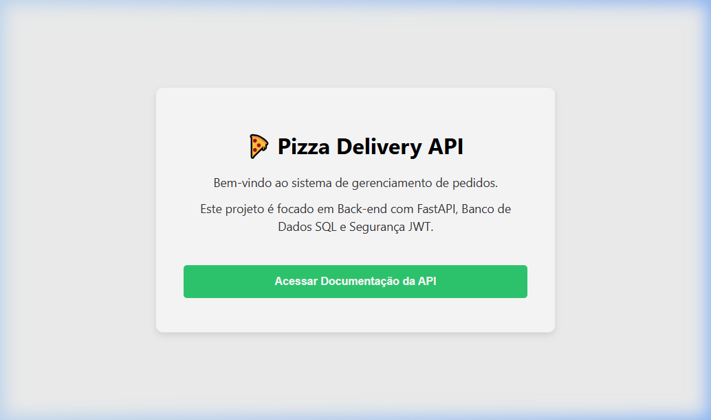
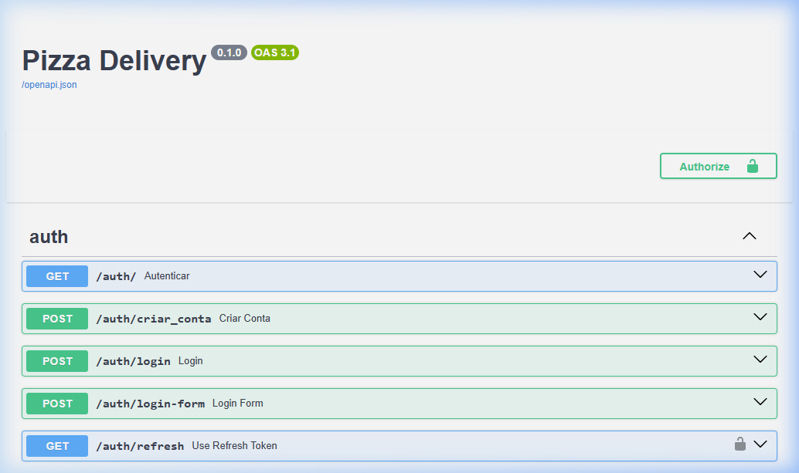

Pizza Delivery API
API RESTful de gerenciamento de pedidos desenvolvida para otimizar o fluxo operacional de pizzarias. Construída com FastAPI para alta performance, conta com autenticação segura via JWT e documentação interativa para escalabilidade técnica.
FastAPI
Python
PostgreSQL
Supabase
JWT